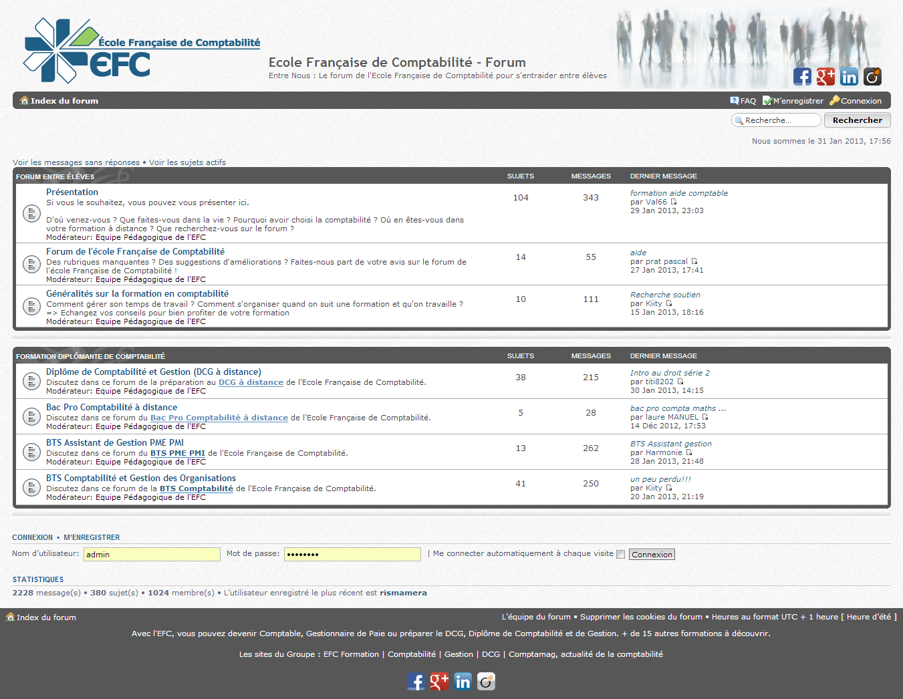
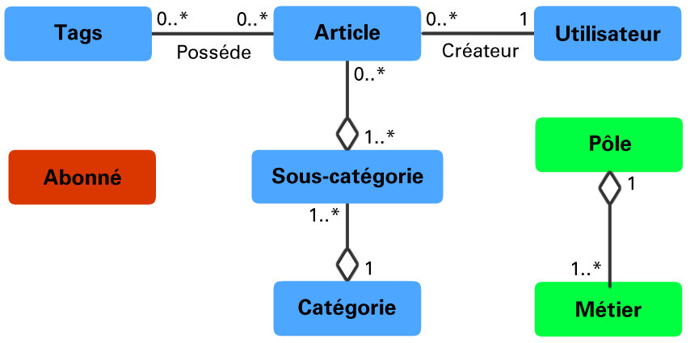
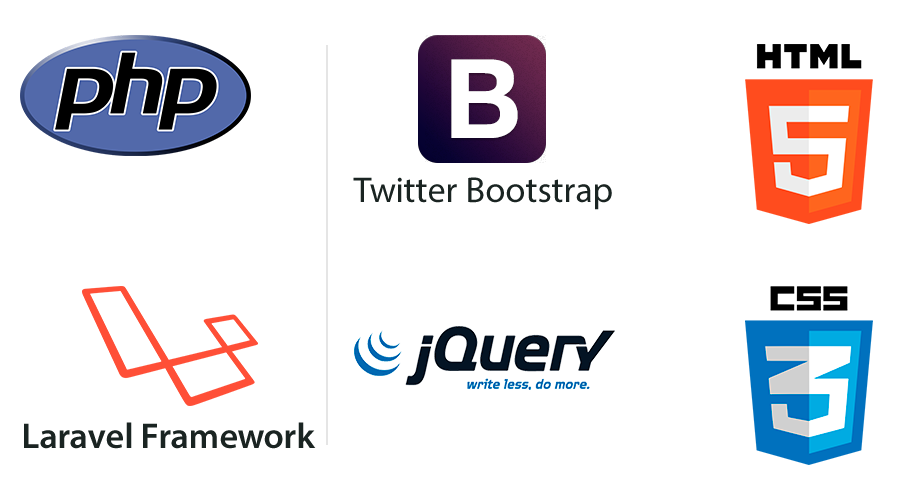
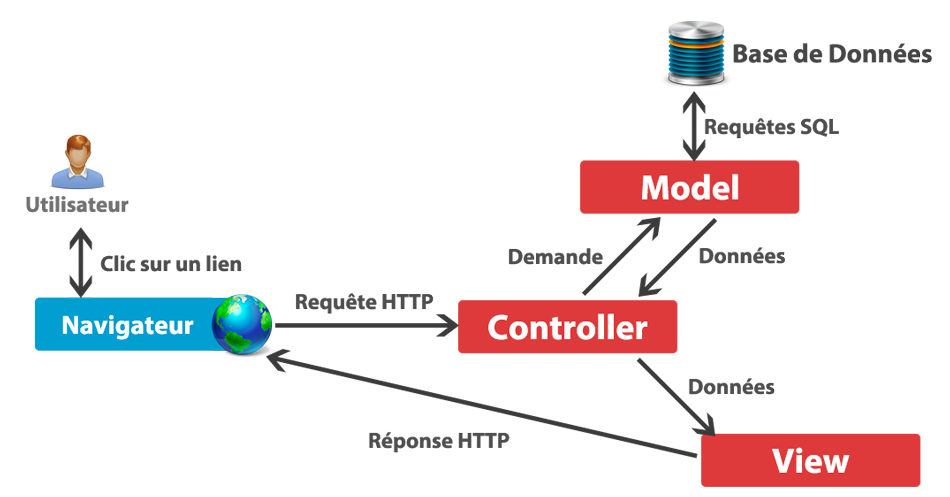
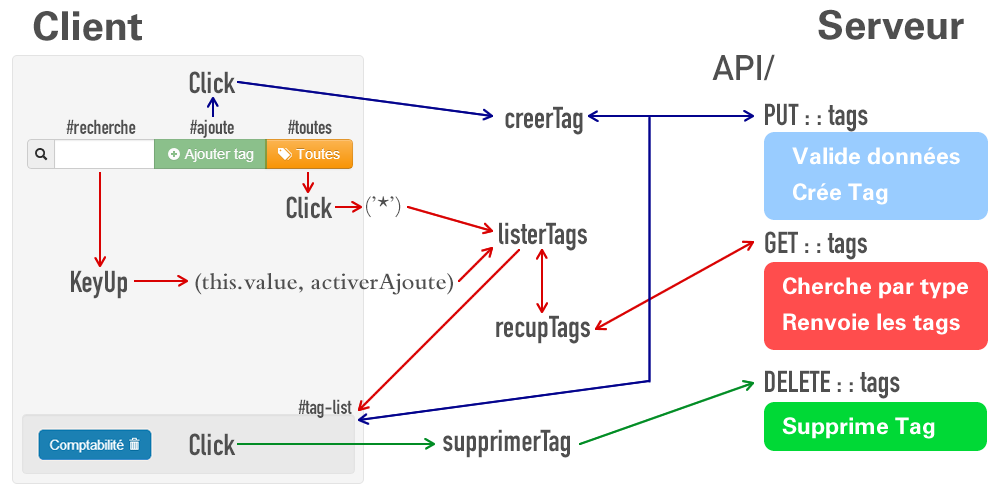
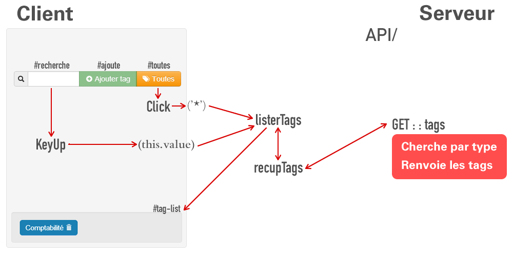
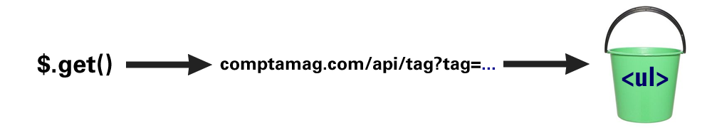
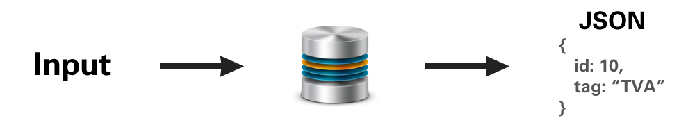

- 1. Introduction 03
- 2. Forum EFC 05
- 3. Comptamag 11
- 3.4. Point Technique 20
- 4. Bilan 27
- 5. Conclusion 30
Sommaire
Contexte
Stagiaire
Bernardo de Paula Rittmeyer
Elève IUT Lyon 1 - G6S4
Centre d'Intérêts: Développement Web
Entreprise
Ecole Française de Comptabilité
Etablissement privé d’enseignement à distance des métiers de Comptabilité,
Gestion et Finance.
GIE Gestadis : pôle des Services Informatiques et des Services Comptables.
Les Sujets de stage
Migration de Forum
http://www.ecolefrancaisedecomptabilite.fr

Redévelopmenet de site Web
Forum EFC
Forum de discussion en ligne pour les étudiants.
Objcetif: diminuer la sensation de solitude
Système: PHPBB
Besoins
- Installation d'une nouvelle version de PHPBB + extensions
- Migrer des informations
- Disposer d'une API pour récupération des données par SQL
- Interface Graphique de récupération des abonnées à la newsletter
- Relooker le forum
Difficultés
- Aucune expérience avec le Système PHPBB
- Plus de 1500 fichiers et 63 tables MySQL
- Faiblement Commenté
- Sans convention de nommage ou style
- Documentation superficielle
- Structure des tables corrompue
Solution
Migration des bases
Exportation et comparaison des structures des basesRestructuration automatique: Expressions Régulières
Récupération des données
"Ouverture" de la base de donnéesSolution - p.2
Interface Newsletter
Option pour s'abonner
Exportation au format .CSV
Sécurité: Authentification unique avec le Forum
Résultat

Comptamag
Magazine en ligne d'informations et actualités Comptables.
Créé en 2005.
Moyen de prospection d’élèves.
Besoins
- Un design attractif et moderne.
- Optimisation SEO.
- Structure hiérarchique adéquate.
- Panneau d’administration :
- Administrateur : interne
- Editeur : externe
- Recherche Google intégré.
Analyse

Diagramme UML des entités du site
Diagramme UML des entités du site
Solutions Utilisées

Conception - Layout
Responsive Layout
Media Queries
@media (max-width: 450px) { /* Dans un petit écran */
.hidden-phone {
display: none; /* Ne pas afficher */
}
}
Résultat adaptable a tout type d'écran.

Conception - Laravel
Le Framework Laravel
- PHP
- Structure de base pour le développement
- Inspiré sur Ruby on Rails
Quelques fonctionnalités: ORM, Routing, Validation de données, RESTful, Structure MVC
Conception - Modéle MVC

Back Office
Gestion des Tags - Point technique
Panneau d'administration : Doit être dynamique et ergonomique.
Gestion des Tags - Schéma
- 
- 
Gestion des Tags - Cotê Client
/* Recherche de tags */
$("#tag-recherche").keyup(function () { // Lors d'une entrée dans le clavier
if ($(this).val().length > 0) { // Si le champ n'est pas vide
liste_ajax_tags($(this).val()); // Cherche les tags
} else { // sinon
tag_btn_disable(); // Désactive le bouton d'ajout
$("#tag-list").html(""); // Vide la liste des tags
}
});
Gestion des Tags - Cotê Client / P.2
// Recherche les tags par requête AJAX à l'API du site
function recup_tags(query, callback){
$.get("/api/tags/", query, function (data) { // Requête GET AJAX
tags = data; // Récupère les résultats
callback(data); // Le callback est executé
});
}

Gestion des Tags - Cotê Serveur
public function get_tags($input = false) {
if($input == false) { // Si on a pas reçu la variable par l'URL
$input = Input::get('tag'); // On vérifie si on l'à reçu par GET
}
/*... Validation (enlevée) ...*/
// Recherche le Tag par le Model
$tag = Tag::where('tag', 'like', '%'.$input.'%')->take($limit)->get();
return Response::json($tag); // Retourne le tag au format JSON
}

Résultats
- Le site est fini et en ligne sur un serveur de test.
- Etape actuelle : Révision des articles.
- Prochaine étape : Mise en production.
Bilan Humain
- Nouvel aspect d'une différente culture.
- Ambiance sympathique (Open Space)
- Adaptation Facile
- Force de proposition.
- Opinions valorisées
- Esprit d'équipe renforcé
Bilan Technique
- Nouvelles problématiques.
- Nouvelles contraintes.
- Niveau plus avancé qu'à l'IUT.
- Plus facile avec les bases acquises en cours
- Utilisation de technologies de pointe.
- Durée de vie plus longue
Bilan Personnel
- Cadre très bien dans mon PPP : Consultant Web
- Travailler dans un cas réel.
- Poursuite en CDD jusqu'à août.
- Poursuite d'études:
- Ingénierie : INSA, Polytech
- License Informatique : Lyon 1
Conclusion
- Taches bien réalisées.
- Difficultés surmontées.
- Poursuite du travail en CDD :
- Redéveloppement du site principal de l'Ecole
- Mon apport peut faire la différence
<Merci de votre attention >
Avez vous des questions?